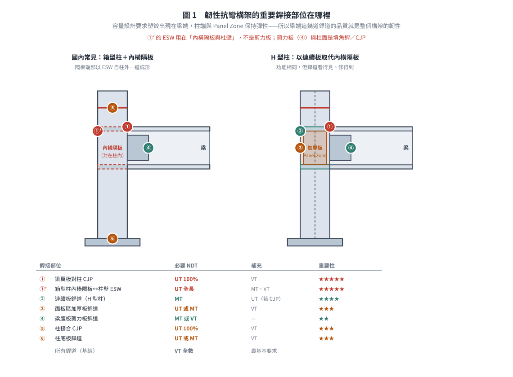
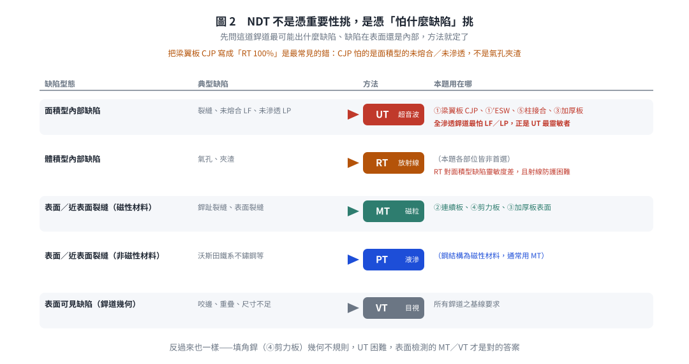
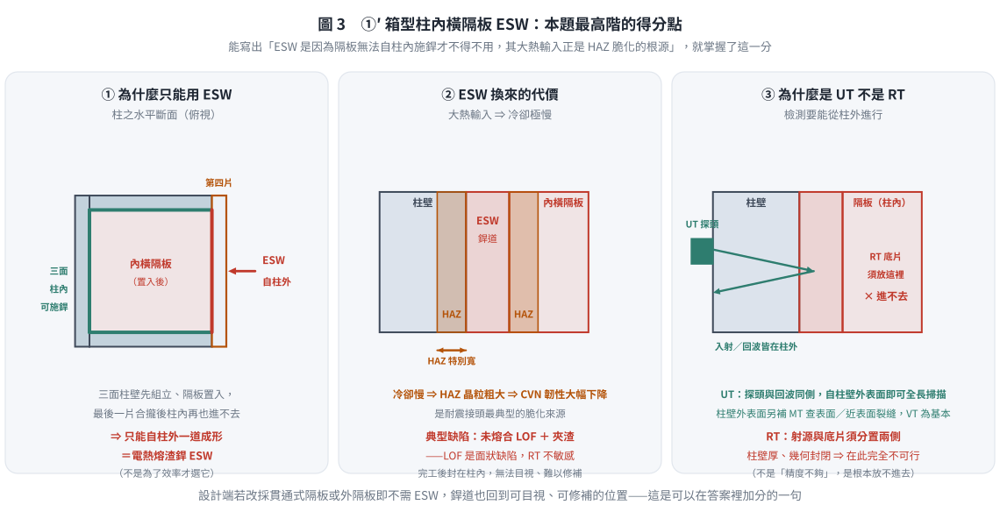

考題編號：SS-2022-3
主分類： SS-U2-3 設計規範對施工之要求
副分類： SD-U3-1 結構耐震設計
設計法： 概念題
標籤： 施工規範 NDT 非破壞檢測 韌性抗彎構架 耐震設計 梁柱接頭 全滲透銲 電熱熔渣銲 內橫隔板 超音波檢測 磁粒檢測 銲接品管
1. 原始題目重述 (Problem Restatement)
試說明韌性抗彎鋼構架的重要銲接部位與所需實施的非破壞檢驗方法。（25 分）
2. 考題核心精神與出題者意圖 (Core Concepts & Examiner's Intent)
核心觀念：韌性抗彎構架的銲接品管是保證耐震性能的最後防線
1994 年 Northridge 地震後，許多原本設計為韌性抗彎構架的梁柱接頭發生脆性斷裂（梁翼板全滲透銲道突然斷裂，無明顯塑性變形）。事後調查發現，問題根源之一正是銲道瑕疵（未熔合、未滲透、裂縫）未被 NDT 檢出。
此題考驗考生是否能：
- 辨識韌性抗彎構架中哪些銲接部位是「高風險、高重要性」
- 為各部位配對合適的 NDT 方法，並說明選擇理由
- 了解容量設計（Capacity Design）→ 哪裡允許塑化、哪裡必須保持彈性
出題者測驗重點：
- 知道「梁翼板對柱全滲透對接銲」是最關鍵的銲接部位（Northridge 教訓）
- 了解 UT（超音波）對全滲透銲道內部面積型缺陷的檢測優勢
- 能區分「必須 100% 檢測」與「抽樣檢測」的部位差異
3. 解題戰略地圖與陷阱分析 (Strategic Roadmap & Trap Analysis)
答題架構：
- 韌性抗彎構架的設計原則（容量設計 → 確定塑化位置）
- 重要銲接部位（至少 4-5 處，含位置說明）——國內作答務必包含「箱型柱內橫隔板之 ESW」
- 各部位對應 NDT 方法及選擇理由
關鍵陷阱：
⚠️ 陷阱1：誤以為「銲道愈多 NDT 要求就愈多」
NDT 要求取決於「銲道破壞的後果」，而非銲道數量。全滲透對接銲（CJP）是高風險部位；角銲（填角銲）雖多，但要求相對較低。⚠️ 陷阱2：忘記說明 NDT 方法選擇的理由
題目問「重要銲接部位 + NDT 方法」，光列出部位名稱或 NDT 方法名稱不夠，須說明「為何選此方法」（如 UT 對面積型內部缺陷最靈敏）。⚠️ 陷阱3：混淆 VT 的地位
VT（目視）是所有銲道完工後的基本要求，但無法代替 UT 檢測內部缺陷，不可單獨作為全滲透銲道的驗收方法。
3.5 變數層次分析（Variable Hierarchy Analysis）
複習提示：解題後，在每個卡住的知識點「卡關?」欄標記
⚠；第二次複習時只看有⚠的項目。
最終目標： 說明韌性抗彎鋼構架（SMRF）的重要銲接部位及各部位應實施的非破壞檢驗（NDT）方法
主要公式（概念題關鍵概念）
NDT 方法選擇邏輯：
- UT（超音波）→ 面狀內部缺陷（LOF、裂縫）→ CJP、ESW
- RT（放射線）→ 體積型內部缺陷（氣孔、夾渣）
- MT（磁粒）→ 鐵磁性材料表面 + 近表面缺陷
- PT（液體滲透）→ 非鐵磁性材料表面缺陷
- VT（目視）→ 所有銲道的基本要求
L1：題目直接給定
| 題目要求 | 說明 |
|---|---|
| 韌性抗彎構架（SMRF） | 最高耐震等級，塑鉸在梁端形成 |
| 重要銲接部位 | 需列出至少 4-5 處 |
| NDT 方法 | 需說明選擇理由 |
L2：需知識點推導
重要銲接部位彙整
| 部位 | 銲接類型 | NDT 方法 | 理由 | 卡關? |
|---|---|---|---|---|
| 梁翼板對柱 CJP 對接銲 | 完全滲透銲 | UT（100%） | 面狀缺陷（LOF／裂縫）用 UT ⚠ 最重要 | |
| 箱型柱內橫隔板 ↔ 柱壁（國內最常見） | 電熱熔渣銲 ESW | UT + VT | 位於梁翼板力流主幹上；ESW 大熱輸入 → HAZ 晶粒粗大脆化、LOF 風險高；且封在柱內無法目視、修補困難 | |
| H 型柱連續板（Continuity Plate）↔ 柱翼板／腹板 | CJP 或填角銲 | UT（CJP 時 100%）／MT | 傳遞翼板集中力，防柱翼板局部彎曲 | |
| 柱接合（Column Splice） | CJP | UT（100%）+ VT | 柱身力流不得中斷 | |
| 柱底板銲道 | CJP 或大尺寸填角銲 | UT／MT + VT | 全棟力流最終傳遞點 | |
| 剪力板／梁腹板填角銲 | 填角銲 | MT 或 VT（基本） | 剪力路徑；填角銲幾何不規則，UT 難施作 | |
| 銲道趾部與端部 | 任何銲道 | MT／PT（選查） | 表面裂縫，鐵磁材料以 MT 最靈敏 |
L3：深層知識（不懂就卡住）
| 知識點 | 說明 | 補強頁 | 卡關? |
|---|---|---|---|
| CJP 必須 100% UT（AISC 341 要求） | SMRF 梁翼板 CJP 必須全面 UT，非抽檢 | SEISMIC-STEEL-SN · WELDED-CONNECTION-DESIGN | |
| UT 適合面狀缺陷（LOF/裂縫） | 超音波在缺陷平面反射強，比 RT 更能偵測薄型缺陷 | WELDED-CONNECTION-DESIGN | |
| VT 是所有銲道的基本要求 | 不能代替 UT；完全滲透銲須 UT + VT 雙重驗收 | WELDED-CONNECTION-DESIGN | |
| ESW 大熱輸入 → HAZ 脆化風險高 | 需特別注意 HAZ 韌性，AWS D1.8 對 ESW 有特殊要求 | SEISMIC-STEEL-SN | |
| 國內 ESW 用在哪裡 | 箱型柱之內橫隔板與柱壁：隔板置入後最後一片柱壁合攏，內部無法施銲，故以 ESW 自柱外一道成形。不是用來銲剪力板 | SS-2024-4 · SEISMIC-STEEL-SN |
4. 步驟化詳細計算過程 (Step-by-Step Detailed Calculation)
一、韌性抗彎構架設計原則與塑化位置
容量設計（Capacity Design）原則：
- 梁柱接頭應確保塑鉸形成於梁端（或 RBS 犬骨接頭的縮小斷面處）
- 柱端（柱膝）、接頭板件區（Panel Zone）應保持彈性
- 因此，梁端接頭銲道品質直接決定整個構架的耐震韌性
銲接品管的位階：
梁端翼板全滲透銲道 ≒ 箱型柱內橫隔板 ESW（同屬力流主幹）→ Panel Zone → 柱接合 → 剪力板／腹板（自上而下依重要性排列，均需嚴格 NDT）
二、韌性抗彎構架之重要銲接部位
部位①：梁翼板對柱全滲透對接銲（最關鍵）
位置： 梁（上下）翼板與鋼柱翼板（或箱形柱側板）之間的全滲透對接銲道（Complete Joint Penetration, CJP groove weld）
重要性： ★★★★★（最高）
- 此銲道承受梁端彎矩傳至柱的主要拉壓力
- 1994 Northridge 地震後被確認為韌性構架最脆弱銲接點
- 銲道瑕疵（未熔合、裂縫）會導致接頭在梁塑化前即發生脆性斷裂，喪失耗能能力
NDT 要求：
- UT（超音波檢測）100% 全數檢測
- 理由：全滲透銲道為內部面積型缺陷（未熔合、未滲透）高發區，UT 對面積型缺陷最靈敏（缺陷面垂直超音波方向時回波最強）；RT 雖可用，但對面積型缺陷靈敏度差，且射線防護困難
- 補充：銲後 VT 目視作為基本確認
部位①′：箱型柱內橫隔板與柱壁之電熱熔渣銲（ESW）——國內構架最關鍵的工廠銲道
位置： 國內韌性抗彎構架多採箱型柱。柱在梁翼板高程須設內橫隔板（Internal Diaphragm），把梁翼板傳來的集中拉／壓力導入柱之另一側。製造時三面柱壁先組立、隔板置入，最後一片柱壁合攏後無法自柱內施銲，故國內慣以 ESW（電熱熔渣銲）自柱外一道成形銲住隔板端部。
重要性： ★★★★★（與梁翼板 CJP 同級）
- 此銲道位於「梁翼板 → 柱壁 → 內隔板 → 柱另一側」的力流主幹上；隔板銲道一旦脆斷，翼板 CJP 銲得再好，力也傳不下去
- ESW 為大熱輸入製程，冷卻極慢 → HAZ 晶粒粗大、CVN 韌性大幅下降，是耐震接頭最典型的脆化來源
- 完工後封在柱內、無法目視、修補極為困難
NDT 要求：
- UT 全長掃描（自柱壁外側入射）為主
- 柱壁外表面補 MT 查表面／近表面裂縫；VT 為基本
- 理由：ESW 之典型缺陷為未熔合（LOF）與夾渣，屬面狀缺陷，RT 不敏感；且柱壁厚、幾何封閉，RT 在此完全不可行
補充：若改採貫通式隔板（Through Diaphragm）或外隔板（External Diaphragm），即不需 ESW，銲道也回到可目視、可修補的位置——這是設計端可以降低此風險的作法。
部位②：連續板（垂直加勁板）銲道
位置： 採 H 型柱時，對應梁翼板位置在柱腹板兩側設置的連續板（Continuity Plate）與柱翼板、柱腹板的連接銲道（其功能與箱型柱之內橫隔板相同）
重要性： ★★★★
- 連續板用於傳遞梁翼板傳來的集中力至柱腹板，防止柱翼板局部彎曲
- 銲道若有缺陷，會導致梁柱接頭局部應力重分配，影響耗能能力
NDT 要求：
- MT（磁粒檢測） 或 UT
- 理由：連續板多以角銲（全滲透或填角銲）連接；角銲表面及近表面裂縫用 MT 最有效率，對磁性材料鋼結構靈敏度高
- 與柱翼板間若為 CJP：補充 UT 100%
部位③：面板區加厚板（補強腹板）銲道
位置： 當柱面板區（Panel Zone）剪力需求過大時，加設的腹板加厚板（Doubler Plate）與柱腹板及翼板的連接銲道
重要性： ★★★
- 面板區承受梁柱接頭傳遞之剪力，加厚板品質直接影響面板區耗能機制
- 加厚板與柱腹板的銲道如有未熔合，加厚板不能有效參與受力
NDT 要求：
- UT 或 MT
- 理由：加厚板與柱腹板全長銲道應以 UT 檢測內部缺陷；表面完工後 MT 確認表面裂縫
部位④：梁腹板與剪力板（Shear Tab）銲道
位置： 梁腹板透過剪力板（Shear Tab）銲接至柱翼板（或隔板）的銲道，通常為填角銲
重要性： ★★
- 承受梁端剪力，也在塑鉸形成後持續傳遞剪力；若剪力板銲道失效，梁端會脫落
- 相對於翼板 CJP，此部位要求較低，因剪力傳遞路徑較多樣
NDT 要求：
- MT（磁粒檢測） 或 VT（目視）
- 理由：填角銲道表面裂縫（尤其銲趾裂縫）用 MT 最有效率；不需 UT（角銲幾何不規則，UT 困難）
部位⑤：柱接合（Column Splice）全滲透銲道
位置： 多層建築中，鋼柱在樓層間的對接銲道（Column Splice），通常為全滲透對接銲
重要性： ★★★
- 柱接合點受設計彎矩、剪力、軸力，地震時可能承受較高需求
- 接合點應保持彈性（容量設計），銲道缺陷可能導致柱在強震中斷裂
NDT 要求：
- UT 100% 全數檢測
- 理由：與梁翼板 CJP 同理，全滲透銲道用 UT 確保無內部缺陷
部位⑥：柱底板銲道（Column Base Plate Welds）
位置： 鋼柱與基礎底板之間的連接銲道，通常為全滲透或大尺寸填角銲
重要性： ★★★
- 底板銲道為整棟建築力流的最終傳遞點，若底板銲道失效，柱將失去支撐
- 重力柱（非側力抵抗系統）可用較低要求，但韌性抗彎構架柱基須嚴格控制
NDT 要求：
- UT 或 MT（依銲接型式選擇）

圖 1 容量設計要求塑鉸出現在梁端、柱端與 Panel Zone 保持彈性，所以梁端這幾道銲道的品質就是整個構架的韌性。本圖攔的是把 ESW 記成「剪力板 ESW」——它用在內橫隔板與柱壁，剪力板與柱面是填角銲／CJP。
三、NDT 方法選擇總表
| 銲接部位 | 銲接類型 | 必要 NDT | 補充 NDT | 理由 |
|---|---|---|---|---|
| 梁翼板對柱（CJP） | 全滲透對接銲 | UT 100% | VT | 內部面積型缺陷，UT 最靈敏 |
| 箱型柱內橫隔板↔柱壁 | ESW 電熱熔渣銲 | UT 全長 | MT（柱壁外表面）、VT | 位於力流主幹；大熱輸入 → HAZ 脆化＋LOF；封在柱內無法目視，RT 不可行 |
| 連續板銲道（H 型柱） | 角銲或 CJP | MT | UT（若 CJP） | 表面／近表面裂縫，MT 效率高 |
| 面板區加厚板銲道 | 角銲 | UT 或 MT | VT | 依長度及重要性選擇 |
| 梁腹板剪力板銲道 | 角銲 | MT 或 VT | — | 填角銲，表面檢測即可 |
| 柱接合（CJP） | 全滲透對接銲 | UT 100% | VT | 同梁翼板 CJP |
| 柱底板銲道 | 全滲透或角銲 | UT 或 MT | VT | 依銲接型式選擇 |
| 所有銲道（基線） | 全部 | VT（全數） | — | 最基本要求 |
四、NDT 方法選擇邏輯提醒
$$\text{面積型內部缺陷（裂縫、未熔合）} \Rightarrow \textbf{UT（超音波）}$$
$$\text{體積型內部缺陷（氣孔、夾渣）} \Rightarrow \textbf{RT（放射線）}$$
$$\text{表面或近表面裂縫（磁性材料）} \Rightarrow \textbf{MT（磁粒）}$$
$$\text{表面或近表面裂縫（非磁性材料）} \Rightarrow \textbf{PT（液滲）}$$
$$\text{表面可見缺陷（銲道幾何）} \Rightarrow \textbf{VT（目視）}$$
全滲透銲道以UT為主，因全滲透銲道最怕的是未熔合（Lack of Fusion, LF）和未滲透（Lack of Penetration, LP）——這兩種都是面積型缺陷，正好是 UT 最靈敏的缺陷類型。

圖 2 NDT 不是憑重要性挑，是憑「這道銲道最怕什麼缺陷、缺陷在表面還是內部」挑。本圖攔的是把梁翼板 CJP 寫成「RT 100%」——CJP 怕的是面積型的未熔合／未滲透，不是氣孔夾渣；反向也一樣，填角銲的剪力板該用 MT／VT 而非 UT。
5. 關鍵爭議點與進階探討 (Critical Issues & Advanced Discussion)
1994 Northridge 地震的教訓
1994 年 Northridge 地震後，美國 SAC Steel Project 對受損建築進行全面調查，發現：
- 梁翼板 CJP 銲道脆裂是最普遍的接頭破壞模式
- 銲道缺陷包括：銲根部未熔合、HAZ 裂縫、銲趾未滲透
- 許多缺陷在竣工驗收時未被 NDT 檢出（因當時 UT 要求不嚴格）
之後，AISC 341（耐震規定）強制要求所有韌性構架的梁柱 CJP 銲道進行 UT 100% 全檢，並使用FEMA 350 認可接頭型式（含 WUF-W、RBS 等）。
RBS（犬骨接頭）的 NDT 特殊考量
若採用 RBS（Reduced Beam Section），梁翼板在距柱面一段距離處被切削縮小：
- 切削面：必須磨光，以 MT 或 PT 確認無表面裂縫（切削引起的應力集中）
- CJP 銲道：仍需 UT 100%
- 目的：讓塑鉸形成於切削斷面處（非在 CJP 銲道），保護銲道不受過大非彈性變形

圖 3 ESW 不是為了效率才選它，是隔板無法自柱內施銲才不得不用；它的大熱輸入正是 HAZ 脆化的根源，而封閉幾何讓 RT 完全不可行。本圖攔的是把此處寫成「用 RT 檢查」，也攔把 ESW 的典型缺陷寫成氣孔——它是面狀的未熔合與夾渣。
考場答題建議
25 分題目，建議配分：
- 說明韌性抗彎構架設計原則（容量設計、塑鉸位置）：5 分
- 列出並說明 4-5 個重要銲接部位（含位置）：12-15 分
- 各部位 NDT 方法及選擇理由：8-10 分
關鍵必寫兩條：
- 「梁翼板對柱全滲透對接銲 → UT 100% 全數檢測」——最核心的答案
- 「箱型柱內橫隔板與柱壁之電熱熔渣銲（ESW）→ UT 全長掃描」——國內接頭型式的特有考點，且與同單元 SS-2024-4（113 年）直接相通；能寫出「ESW 是因為內隔板無法自柱內施銲才不得不用，其大熱輸入正是 HAZ 脆化的根源」，即掌握本題最高階的得分點
修正日期：2026-08-22 —— 與同批 SS-2024-4 一併更正 ESW 之適用部位。原解析 §3.5 L2 將電熱熔渣銲列為「腹板剪力板 ESW」，實則國內箱型柱之 ESW 用於內橫隔板與柱壁之工廠銲接（剪力板與柱面為填角銲／CJP）。除更正該列外，另新增 §4「部位①′ 箱型柱內橫隔板 ESW」一節、擴充 §3.5 L2 重要部位表與 §4 三 NDT 總表、於 L3 補「國內 ESW 用在哪裡」一則，並於 §5 考場建議補列第二條必寫要點。詳見 wiki/log.md 2026-08-22 第五批。